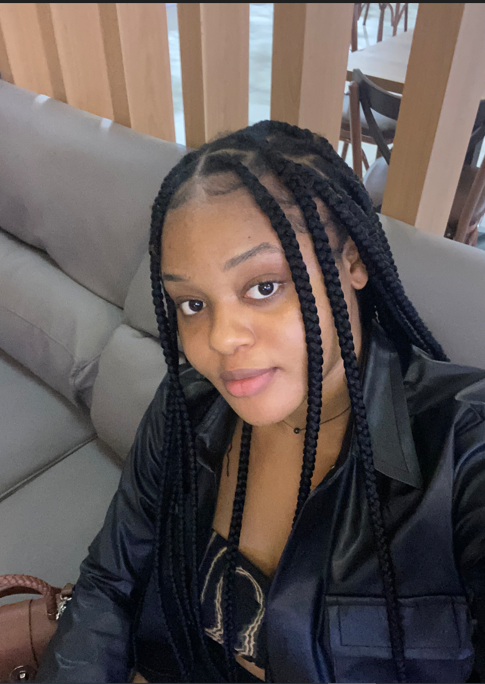

BENITA MATTHEW

SUMMARY
Current student looking to join the workforce to gain real-world experience. Ability to complete tasks on
time in both individual and team settings. Dependable and reliable, ready to learn and grow with your
company.
EDUCATION
University of Port Harcourt
2020-present
EXPERIENCE
DezignHers (Volunteer)
November 2022 - Present
- Update and maintain community documents to ensure accuracy and relevancy.
- Assist the community leader with tasks to ensure smooth operations.
- Identify and secure resources for community events, enhancing their success.
- Manage event content in the calendar.
- Manage social media content on Notion.
TheGram.ng (Volunteer)
September 2021 - Present
- Document official company records to ensure proper organization and accessibility.
- Create compelling social media content to increase brand visibility and engagement.
- Conduct offline advertising initiatives to expand brand's presence beyond online platforms.
- Track social media engagements with relevant KPIs.
- Assist with customer support by providing user onboarding documents.
Nelmar Technologies - Computer Operator
September 2022 - Present
- Typed and printed documents, ensuring timely and accurate delivery.
- Designed graphics to meet clients' specifications and enhance visual appeal.
- Maintained strict confidentiality to protect sensitive information.
- Captured passport photos and edited images to meet quality standards.
- Managed stationery sales and maintained accurate sales records.
SKILLS
Hard Skills - HTML5, User Interface Design, User Experience Researcher, Content writing
Tools - Visual Studio Code, GitHub, Figma, Miro, Microsoft Tools, Adobe XD, Google worktools
Skills - Document management, Graphic design, Social media content creation, Brand visibility and engagement, Attention to detail, Sales and customer service, typing, and data entry.
CERTIFICATIONS
Google UX Design Professional Certificate - COUSERA (2022)
- Foundation of User Experience (UX) Design
- Start the UX Design Process: Emphathize, Define, and Ideate
- Build wireframes and Low-Fidelity Prototypes
- Conduct UX Research and Test Early Concepts
CONTACT / HOBBIES
Contact Me
My Hobbies